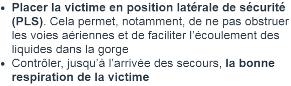
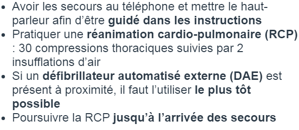
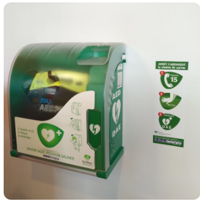

Une fois l’alerte donnée auprès des services compétents, il peut être nécessaire de devoir
apporter les premiers secours à la victime.
En fonction des blessures et de l’état physique
de la victime, une prise en charge différente doit être apportée.
Une hémorragie est une perte de sang continue qui ne s’arrête pas spontanément.
En cas d’hémorragie, il faut :
En cas de perte de connaissance, la victime est inconsciente, mais respire encore.
Dans ce cas, il faut :
Lors d’un arrêt cardiaque, le coeur ne fonctionne plus ou fonctionne mal. L’arrêt cardiaque est très grave, car il empêche le coeur d’apporter de l’oxygène au cerveau : les lésions au cerveau surviennent dès la première minute !
En cas d’arrêt cardiaque, il faut :
Le DAE peut être utilisé par une personne peu ou pas formée et peut permettre de rétablir une activité cardiaque normale.
Bon courage pour votre code !